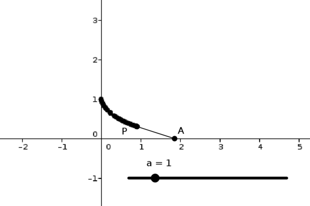
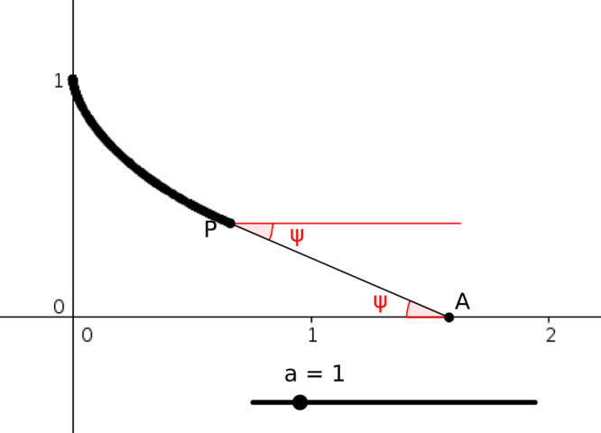

I slowly pull a weight along a (rough) table using a piece of string, moving my hand in a straight line.
This applet shows the situation in an ideal setting: the weight is at P, and the end of the string is at A. Move A to see what happens. (Note that if you move A backwards again in this applet, the weight simply retraces its path, which is not what would happen in reality.)
You can use the slider (a) to adjust the length of the string.

What is the shape of the path that the weight traverses?
From the applet or by thinking about the problem, how does the line AP relate to the path?
How can you use this to solve the problem?
The line AP appears to be a tangent to the path.
This is true, since the weight is always being pulled in the direction of the string. As it is moving slowly (due to friction), it will move in the direction it is being pulled.
If we draw in the angle of AP, we see the following:

If we let the coordinates of P be (x,y), then we have
dydx=−tanψ.
But we also know that the length of AP is a, so we also have
asinψ=y
from the right-angled triangle with hypotenuse AP.
Since sinψ=y/a, we have cosψ=1−sin2ψ⎯⎯⎯⎯⎯⎯⎯⎯⎯⎯⎯⎯⎯⎯⎯⎯√=1−y2/a2⎯⎯⎯⎯⎯⎯⎯⎯⎯⎯⎯⎯⎯⎯⎯√. Thus we have, from dy/dx=−tanψ:
You may well find that the answer you get using this approach is different from that obtained from Approach 2. Are they equivalent, or is one of the approaches flawed?